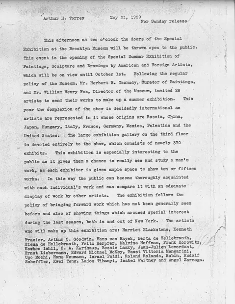

Group Exhibition of Paintings, Sculpture and Drawings by American and Foreign Artists: press releases
访问原网页 ↗Visit original website ↗

S104 · Brooklyn Museum Archives / Department of Public Information · 1929-05-31、06-03
5月31日新闻稿在参展者名单中列出 Kwei Teng。6月3日的艺术家小传称，他曾在华盛顿大学修习绘画、雕塑，矿学院大楼装有其浮雕。稿件记生于1902年苏州，与其他资料有异。The May 31 release lists Kwei Teng among exhibitors. His June 3 biography cites his study of painting and sculpture at Washington and the installation of a relief in the College of Mines Building. Its 1902 Suzhou birth account conflicts with other records.
馆藏图像与原文Archived images and documents
- 布鲁克林博物馆夏季展览：参展名单Brooklyn Museum summer exhibition: list of participating artists I068
- 布鲁克林博物馆新闻稿：滕圭小传续页Brooklyn Museum press release: continuation of the Teng biography I069


原始网址Original URL
https://opencollection.brooklynmuseum.org/exhibitions/1408